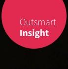

Royal Holloway, University of London
Graduated with First Class Honours and received the University of London Driver Prize for the highest grades in the graduating year.
Darsh Kodwani works across machine learning, scientific thinking, and business execution. The through-line is a conviction that rigorous, data-driven technology can help solve the world’s biggest problems.
Senior Data Science Manager at Microsoft, focused on AI solutions for asset-heavy industries.
Born in Ahmedabad, raised largely in Adipur, moved to the UK at 12, with formative academic years in Toronto and Oxford.
Darsh was born in Ahmedabad, Gujarat, and spent most of his childhood in Adipur in western India, with a brief early period in Manchester. He moved to the UK when he was 12 and has lived there since, except for two years in Toronto during his master’s degree.
His day-to-day work blends machine learning, software engineering, and strategic problem-solving. Alongside that, he continues to write and think about research questions in physics, statistics, and machine learning.
Statistics, mathematics, and programming are the common languages behind most of his work. Many of those tools were sharpened outside the classroom through self-learning, industry projects, and teaching.
Learning and teaching remain central themes. That same curiosity drives his broader view that rigorous technical work should ultimately create useful real-world outcomes.
Graduated with First Class Honours and received the University of London Driver Prize for the highest grades in the graduating year.
Graduated with a GPA of 3.92/4.0 under the supervision of Ue-Li Pen, strengthening the bridge between theory and computation.
Completed doctoral research under Pedro G. Ferreira. Thesis: Origin and evolution of the universe.

Leads AI work for industry solutions in the UK, especially for asset industries. The work spans predictive maintenance, remaining useful life models, and cloud-scale software deployment across cross-functional global teams.

Led teams of data scientists and ML engineers building analytics and AI tools for asset-industry clients, while also contributing to internal ML operations capabilities inside the Institute of AI.
Worked on analysis and automation for biological microscopy data at a biotech company built around super-resolution imaging technology from Oxford Physics.
Built supervised learning and reinforcement learning systems to optimize energy usage in buildings, combining practical product thinking with climate-tech impact.

Delivered scientific and technical R&D consulting projects ranging from neuromorphic computing forecasts to deep-tech due diligence and expert-led market analysis.
Led Oxford student and researcher teams on client work in logistics and clean energy, translating ambiguous client goals into structured project execution.
Worked on supervised machine learning models for football analytics using large-scale match datasets and feature engineering.
Developed novel alloy-based temperature calibration approaches for thermocouples inside experimental apparatus.
Automated the opening and closing of the PIRATE telescope in Mallorca based on weather analysis, earning a Gold Crest award from the British Science Association.
For research collaborations, AI consulting, speaking, or hiring conversations, the fastest routes are LinkedIn, GitHub, Google Scholar, or direct email.